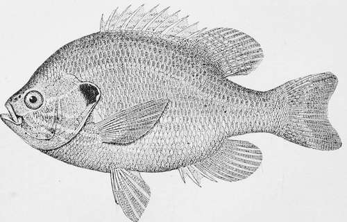

The Common Sun-Fish, Pumpkin-Seed Or Sunny-Lcpovlis Gibbosus (Linnaeus)
Description
This section is from the book "American Game Fishes", by W. A. Perry. Also available from Amazon: American Game Fishes: Their Habits, Habitat, and Peculiarities; How, When, and Where to Angle for Them.
The Common Sun-Fish, Pumpkin-Seed Or Sunny-Lcpovlis Gibbosus (Linnaeus)
Description
Body deep, very gibbous, both dorsal and ventral outlines strongly curved; depth in adult, a little more than half its length without caudal; the head a little more than a third; eye large; 8 to 4 1-2-in. head, about equal to the opercular flap; mouth small, the maxillary scarcely reaching to orbit; profile usually forming an angle above eye; fins well developed, the spines of the dorsal rather high; the spines as long as from snout to past pupil; pectoral fins long, reaching to anal; opercular flap moderate, broad and short, bluntly rounded, black except a broad edge on the lower posterior part, which in life is always bright scarlet and always a striking feature; fin-rays: dorsal X, 10; anal III, 10; lateral line with 36 to 45 scales; coloration very variable, according to the surroundings of the fish; back greenish-olive, usually dark; sides profusely spotted with orange; belly orange-yellow; lower fins orange, the upper olivaceous, with the membranes closely spotted with orange and olive, with clear blue wavy streaks. Length 6 to 8 or to inches.
The common Sun-fish is found throughout the Great Lake Region, in the Upper Mississippi, eastward to the rivers of Maine, and thence southward as far as Georgia in the streams east of the Alleghanies. Its geographical range, singularly enough, exactly coincides with that of the Yellow Perch, but no other fish whatever shows the same eccentricity of going southward on the east side of the moutains, while avoiding the middle and lower Mississippi.
As already stated, the Sun-fish is pre-eminently a boy's fish. It is active, handsome and voracious. Any bait small enough for it to swallow, it will take with an energy worthy of a fish ten times its size.
The following account of its nest-building habits is given by Dr. Holbrook. I suppose that other Sun-fishes share these habits, but no other species has been so carefully observed.
"This fish prefers still and clear waters. In the spring, the female prepares herself a circular nest, by removing all reeds or other dead aquatic plants from a chosen spot of a foot or more in diameter, so as to leave bare the clean gravel or sand; this she excavates to the depth of three or four inches, and then deposits her spawn, which she watches with the greatest vigilance; and it is curious to see how carefully she guards this nest against all intruders; in every fish, even those of her own species, she sees only an enemy, and is restless and uneasy till she has driven it away from her nurser)'. We often find groups of the nests placed near each other along the margin of the pond or river that the fish inhabits, but always in very shallow water; hence they are liable to be left dry in seasons of great drought. These curious nests are frequently encircled by aquatic plants, forming a curtain around them, but a large space is invariably left open for the admission of light."
Common Sunfish-Lcfiomis gibbosus.
Thoreau ("Week on Concord and Merrimack") thus spoke of this fish:
"It is the most common of all, and seen on every urchin's string, a simple and inoffensive fish, whose nests are visible all along the shore, hollowed in the sand, over which it is steadily poised through the summer hours on waving fin. Sometimes there are twenty to thirty nests in the space of a few rods, two feet wide by half a foot in depth and made with no little labor, the weeds being removed, and the sands shoved up on the sides like a bowl. Here it may be seen early in the summer assiduously brooding, and driving away minnows and larger fishes, even its own species, which would disturb its ova, pursuing them a few feet, and circling around swiftly to its nest again; the minnows, like young sharks, instantly entering the empty nests, meanwhile, and swallowing the spawn, which is attached to the weeds and to the bottom on the sunny side. The spawn is exposed to so many dangers that a very small proportion can ever become fishes, for besides being the constant prey of birds and fishes, a great many nests are made so near the shore, in shallow water, that they are left dry in a few days, as the river goes down. These and the Lampreys are the only fishes' nests that I have observed, though the ova of some species may be seen floating on the surface. The breams are so careful of their charge that you may stand close by them in the water and examine them at your leisure. I have thus stood over them half an hour at a time and stroked them familiarly without frightening them, suffering them to nibble at my finger harmlessly, and seen them erect their dorsal fins in anger when my hand approached their ova, and have even taken them gently out of the water with my hand; thoughthis cannot beaccom-plished by any sudden movement, however dexterous, for instant warning is conveyed to them through their denser element, but only by letting the fingers gradually close about them as they are poised over the palm and with the utmost gentleness raising them slowdy to the surface.
"Though stationary, they keep up a constant sculling or waving motion with their fins, which is exceedingly graceful, and expressive of their humble happiness, for unlike ours, the element in which they live is a stream which must be con-tantly resisted. From time to time they nibble at the weeds at the bottom or overhanging their nests, or dart after a fly or worm. The dorsal fin, besides answering the purpose of a keel, with the anal, serves to keep the fish upright, for in shallow water where this is not covered, they fall on their sides.
"As you stand thus, stooping over the bream in its nest, the edges of the dorsal and caudal fins have a singular dusty golden reflection, and its eyes, which stand out from the head, are transparent and colorless. Seen in its native element, it is a very beautiful and compact fish, perfect in all its parts, and looks like a brilliant coin fresh from the mint. It is a perfect jewel of the river, the green, red, coppery, and golden reflections of its mottled sides being the concentrations of such rays as struggle through the floating pads and flowers to the sandy bottom, and in harmony with the sunlit brown and yellow pebbles. Behind its watery shield it dwells, far from many accidents inevitable to human life."
Dr. Goode quotes from Mr. W. C. Harris: "I confess to a fondness for catching the 'Pumpkin seed' upon the lightest of light fly rods with leader and line of a spider-web consistency. I have caught them, averaging a half pound in weight, by the dozen, with black and brown hackles, and when they reach that size they are so sprightly in their play, when hooked on Trout tackle, that we cannot deny them a niche in the gallery of game fishes."
Continue to:
- prev: The Yellow Bass, White Bass, Rock Bass, Calico Bass, Crappie, Yellow Perch And Other "Boys' Fishes."
- Table of Contents
- next: The Long-Eared Sun-Fish-Lcpomis Vicgalotis (Rafinesque)